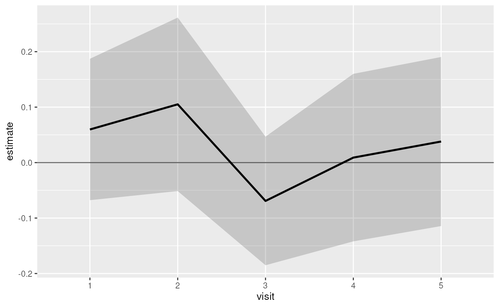

plotTimeEffect() draws a model estimate at each time with its
interval, against a reference line at zero: a difference between groups
at each time point, a time by group interaction, or a GAM difference
curve.
plotTimeEffect(x, ...)
# S4 method for class 'SummarizedExperiment'
plotTimeEffect(x, name, time.col, group.by = NULL, ...)
# S4 method for class 'data.frame'
plotTimeEffect(x, time.col, group.by = NULL, ...)
# S4 method for class 'MultiAssayExperiment'
plotTimeEffect(x, ..., experiment = 1L)Arguments
- x
a
SummarizedExperimentobject with the results inmetadata(x), or adata.frameof results with the columnstime.colandestimate, and optionallylowerandupperfor an interval.- ...
additional arguments passed to
geom_line.- name
Character scalar. Specifies the entry ofmetadata(x)holding the results.- time.col
Character scalar. Specifies the column of the results that contains the times: numeric,Date,POSIXctor a factor of visits.- group.by
Character scalar. Specifies the column of the results that splits the estimates into curves, such as the contrast or the feature. (Default:NULL)- experiment
Character scalarorinteger scalar. For aMultiAssayExperiment, the experiment to plot; its samples get thecolDataofx. (Default:1L)
Value
A ggplot object.
Details
The y axis shows the effect, not the value of a variable; to draw fitted
values over the data, use the fit argument of
plotTrend.
Examples
data("hitchip1006", package = "miaTime")
tse <- hitchip1006
tse <- tse[, tse$subject %in% names(which(table(tse$subject) >= 3))]
tse$visit <- factor(ave(tse$time, tse$subject, FUN = rank))
# Difference in diversity between men and women at each visit, from a
# linear model per visit; each subject has one sample per visit
cd <- as.data.frame(SummarizedExperiment::colData(tse))
effect <- do.call(rbind, lapply(split(cd, cd$visit), function(d) {
model <- lm(diversity ~ sex, data = d)
ci <- confint(model)["sexmale", ]
data.frame(visit = d$visit[1L], estimate = coef(model)[["sexmale"]],
lower = ci[[1L]], upper = ci[[2L]])
}))
plotTimeEffect(effect, time.col = "visit")

# The same results stored in metadata(tse)
S4Vectors::metadata(tse)$sex_effect <- effect
plotTimeEffect(tse, name = "sex_effect", time.col = "visit")